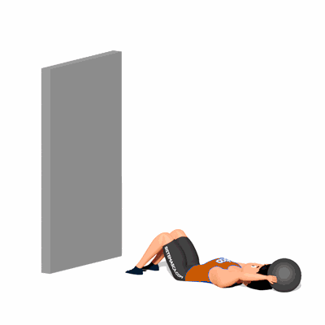

Abdominal com Wall Ball

O exercício trabalha o fortalecimento e hipertrofia da região abdominal, com enfoque no músculo Reto Abdominal.
Ficha Técnica
Tipo: CrossFit
Grupo Muscular: Abdome
Aparelho: Nenhum
Músculos: Nenhum
Como realizar
- De frente com a parede, deite-se de costas com os joelhos flexionados a 90 graus e pés encostado na parede;
- Segure acima da cabeça uma Medicine Ball com as duas mãos;
- Contraia o abdômen para levantar o tronco do chão, flexionando-se em direção aos joelhos e levando a bola junto;
- Quando o tronco chegar próximo ao joelho, arremesse a bola a parede e ao pega-la de volta já realize o movimento para retornar a posição inicial;
- Repita os movimentos pela quantidade de repetições orientada pelo professor(a);
 RC STORE
RC STORE